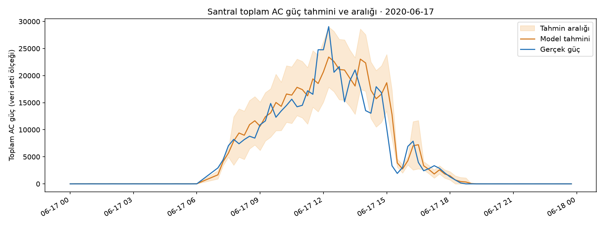

MODELİ ANLAMAK · HATA ANALİZİ
Model ne zaman yanılıyor?
Son test döneminde tahmin hatasını saat ve inverter bazında incele. Modelin hangi ölçümlere dayandığını, ayrıca büyük üretim sapması uyarısının nasıl belirlendiğini gör.
SANTRAL TOPLAMI · 15 DAKİKA SONRASI
Model tahmini ne kadar belirsiz?
Geçmiş doğrulama hatası, o andaki santral güç düzeyine göre ölçüldü. Bu hatayla tahminin çevresine bir aralık çizildi; aşağıda ayrı tutulan son testte ne kadar tuttuğu gösterilir.
Son testte aralıkta kalan——
Gündüz aralıkta kalan——
Ortalama aralık genişliği—toplam AC güç ölçeğinde

Nasıl okunmalı? Bu aralık kesin sınır veya garanti değildir. Modeller geçmiş dönemde eğitildi; kapsama oranı yalnızca ayrılmış test döneminde ölçüldü. Başka santral ve mevsimlerde değişebilir.
SON TEST VERİSİ
Saatlere göre tahmin hatası
Her çubuk, o hedef saatindeki ortalama mutlak hatayı (MAE) gösterir. Kısa çubuk daha iyi tahmin demektir.
Basit tahmin Model
GÜNDÜZ DOĞRULAMA VERİSİ
Model hangi bilgilere dayanıyor?
Bir bilginin değerlerini karıştırıp modelin hatasının ne kadar arttığını ölçtük. Büyük artış, modelin o bilgiden daha çok yararlandığını gösterir.
Nasıl okunmalı? Bu değerler gündüz doğrulama kayıtlarından hesaplandı. Birbirine bağlı ölçümler nedeniyle kesin neden-sonuç ilişkisi göstermez; modelin kullandığı bilgileri anlamaya yardım eder.
OPERASYONEL YORUM
Büyük sapma uyarısı
22 inverterin tahminleri ve gerçek güçleri toplanır. Aradaki fark, doğrulama dönemindeki toplam güç hatalarının %95 sınırını aşarsa simülasyonda “Büyük sapma” uyarısı çıkar.
Bu uyarı ne demek? Operatörün o zaman aralığını incelemesi için bir işarettir. Veri setinde doğrulanmış arıza etiketleri bulunmadığı için tek başına inverter arızası teşhisi değildir.
Uyarıları simülasyonda gör